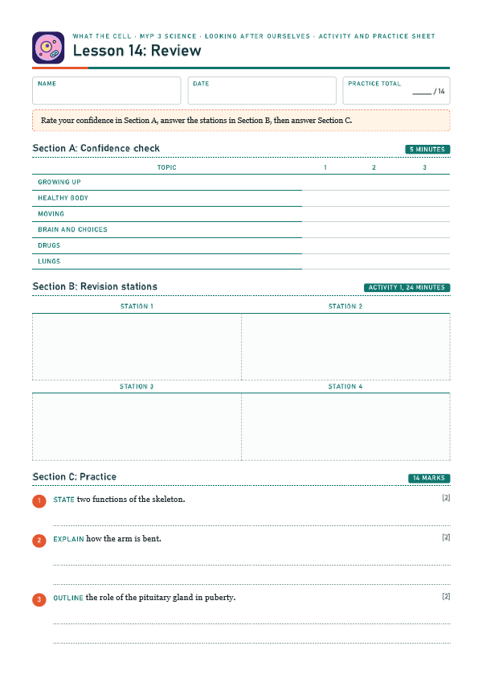

By the end of the lesson you can
- Recall key facts from the unit
- Explain links between lifestyle choices and body systems
- Apply ideas to new situations
- Reflect on the statement of inquiry
Keys: arrows or a presentation clicker move the slides, F for full screen. Slides with a red dot have a video or simulation.
Simulations
- Lab
Print and practise

Activity and practice sheet
Used in the lesson’s activities, with practice questions. Your teacher has the answers.
Download (PDF)Lesson 14 slides
All 11 slides in one file, to read again or print. The video buttons on the slides open YouTube.
Download the slides (PDF)Revising? The Revision tab on the unit page has the unit notes and review.
Class activity pack
Everything to print for the lesson’s activities: picture cards, sorting mats, station cards with their kit lists, and the teacher’s set-up notes. Print it before class.
Download the activity pack (PDF)Notes: Review
puberty
Body changes that allow reproduction. For example: growth spurt.
antagonistic pair
Muscles pulling opposite ways. For example: biceps and triceps.
synovial joint
A moving joint with cartilage and fluid. For example: knee.
depressant
Drug that slows the nervous system. For example: alcohol.
alveoli
Air sacs for gas exchange. For example: 480 million.
carcinogen
Substance that can cause cancer. For example: tar.
Key words
| puberty | body changes that allow reproduction |
|---|---|
| alveoli | air sacs for gas exchange |